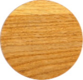

Tölgy

A tölgy kemény lombos faanyag, Magyarországon elsősorban a kocsányos tölgy (Quercus robur) illetve a kocsánytalan tölgy (Quercus petraea) anyagát hasznosítják. A csertölgy faanyaga cser név alatt szerepel.
A kocsányos és a kocsánytalan tölgy anyaga szemre nagyon hasonlít egymásra, de a kocsánytalan tölgy átlagban kissé sűrűbb, keményebb, durvább rostú. A szíjács keskeny, sárgásfehér, a geszt sárgásbarna. Gyűrűs likacsú fa. Nagy, kerek edényei jól láthatóak, a keresztmetszeten a korai pásztában az évgyűrűhatár mentén egy (kocsányos tölgy) vagy több (kocsánytalan tölgy) sorban helyezkednek el. A késői pászta felé gyors átmenettel szűkülnek, és sugárirányú sorokba rendeződnek, a kocsánytalan tölgynél néhol villásan elágazó mintázatot alkotnak. Különböző vastagságú bélsugarai vannak, ezek sárgás színűek, a nagyobbak elég feltűnőek. A bélsugarak a húrmetszeten sötét, akár 6 cm-es vékony hosszanti vonalak, a sugármetszeten szabálytalan alakú, különböző méretű fényes, barnás csíkok formájában tűnnek fel.
Szárítás: Lassan, kíméletesen kell szárítani, hajlamos a repedezésre. A csavarodott növésű fa vetemedhet, teknősödhet.
Megmunkálás: Minden eljárással jól megmunkálható. Közepesen faragható. Csak gőzölés után késelhető, hámozható. Gőzölve hajlítható.
Rögzítés: Nehezen szegezhető, csavarozható. Hidegen jól, melegen problémásan ragasztható.
Felületkezelés: Jól pácolható, pórustömítéssel jól lakkozható.
Tartósság: A geszt általában gombaálló, a szíjácsot rovarok károsítják. Élettartama szabadban kb. 85 év, vízben kb. 500 év, állandóan szárazon kb. 800 év.
Széles körben használják. A bányászatban, a kádáriparban, a parkettafríz-termelésben elsődleges fontosságú. A fűrész- és lemezipar egyik legfontosabb alapanyaga.